Kuopos programėlės
Paciento monitoriaus simuliatorius treniruotėms ir trys gidai pagalbai sužeistajam: Role 1 punkte, lauke ir ilgalaikės priežiūros metu. Veikia telefone be interneto, įdiegti galima tiesiai iš naršyklės.
SIM
Paciento monitoriaus simuliatorius. Vienas telefonas tampa monitoriumi su EKG, SpO₂, AKS ir aliarmais, kitas – instruktoriaus pultu. Būklė keičiasi pagal tai, ką komanda daro: procedūras, vaistus, skysčius ir kraują.
Mūsų serveryje veikia Pulse Physiology Engine – atvirojo kodo žmogaus fiziologijos modelis (Kitware). Jis skaičiuoja paciento gyvybinius rodiklius: kraujo netekimą, pneumotoraksą, kvėpavimo takų obstrukciją, vaistų, skysčių ir kraujo poveikį. Be interneto SIM veikia su supaprastintu telefono modeliu.
Pulse serveriui reikalingas raktas (žetonas) – dėl jo kreipkitės į Moebius.
Apie Pulse Physiology Engine- Scenarijai MEDEVAC ir Role 1, perdavimas iš vieno į kitą
- Sužalojimai ir pagalba iki atvykimo – pagal CLS ir CMC ribas
- Instruktoriaus įvykiai: atsilaisvinęs turniketas, nukritęs elektrodas, širdies sustojimas
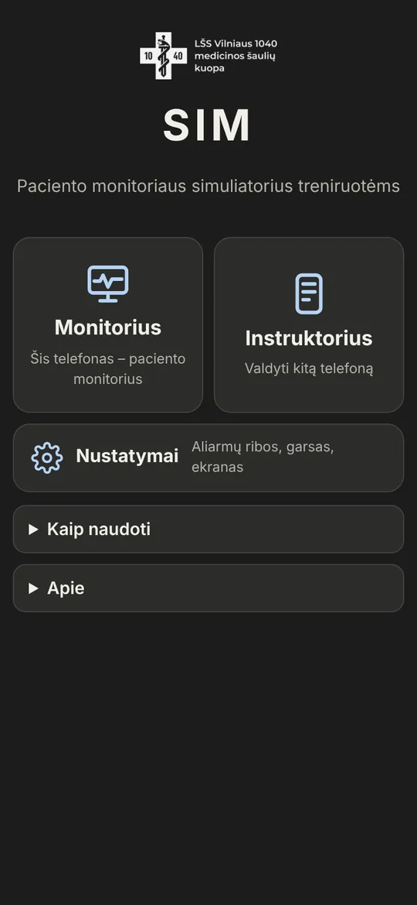
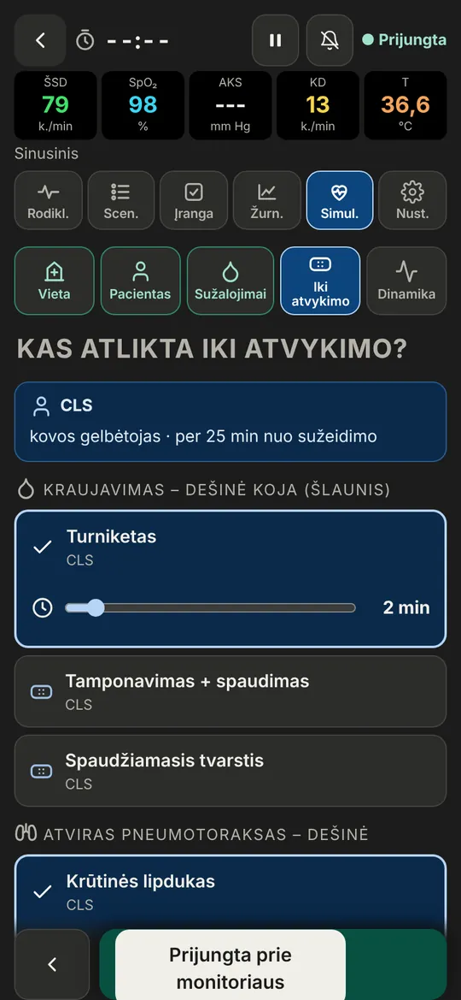
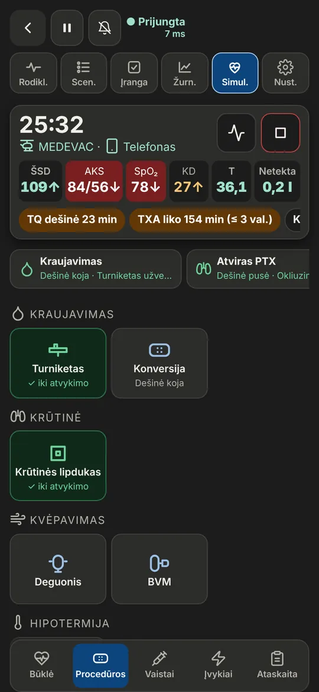
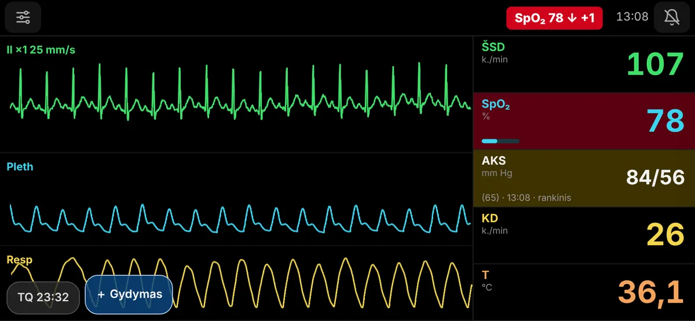
ETC gidas
Traumos komandos gidas Role 1 punktui pagal European Trauma Course. Kiekvienas komandos narys mato savo užduotis: A – kvėpavimo takai ir vadovavimas, B – kvėpavimas, C – kraujotaka.
- Eskalavimo planai: masyvus kraujavimas, kvėpavimo takų obstrukcija, trauminis sustojimas
- Pirminė ir antrinė apžiūra, gydymo tikslai
- Vaistai, transfuzija, nudegimai, GKS, 10 s triažas, MASCAL
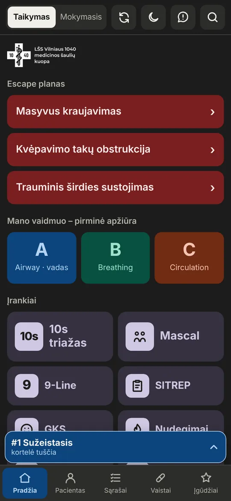
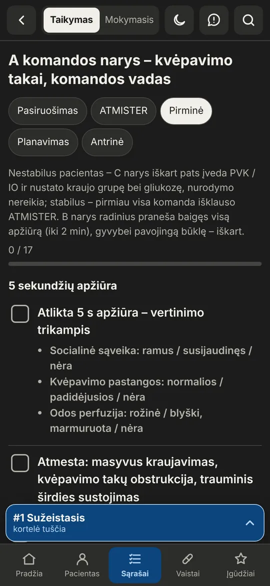
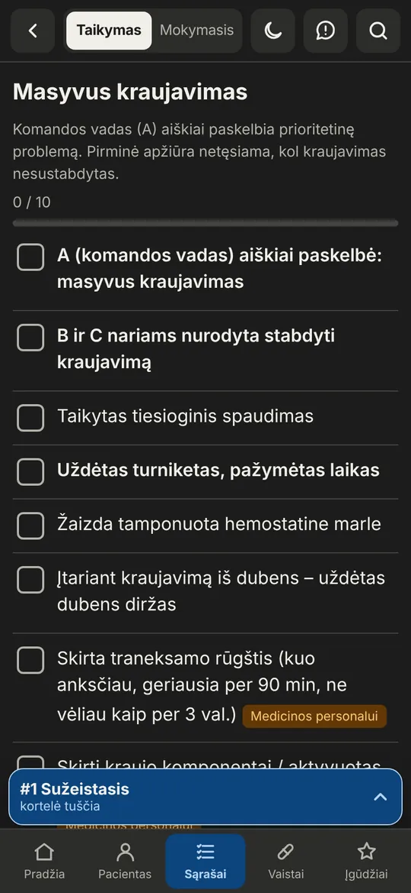
March gidas
Atminties priemonė šauliams gelbėtojams ir kovos medikams pagal TCCC 2026 MARCH PAWS. Veda per fazes nuo apšaudymo iki evakuacijos ir padeda nieko nepamiršti, kai rankos užimtos.
- CUF, TFC ir TACEVAC kontroliniai sąrašai
- Sužeistojo kortelė, MIST, 9-Line, SITREP, CONTREP, SALUTE
- Vaistų dozės ir įgūdžiai su iliustracijomis ir vaizdo įrašais
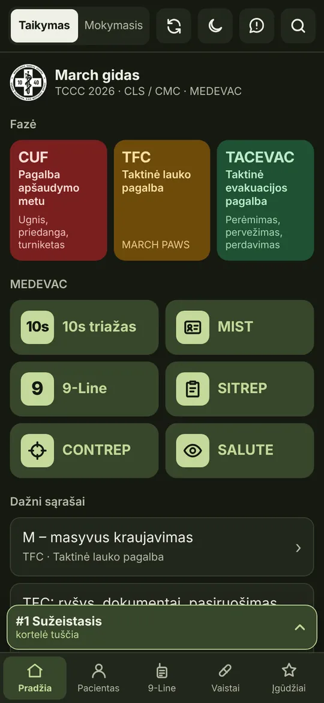
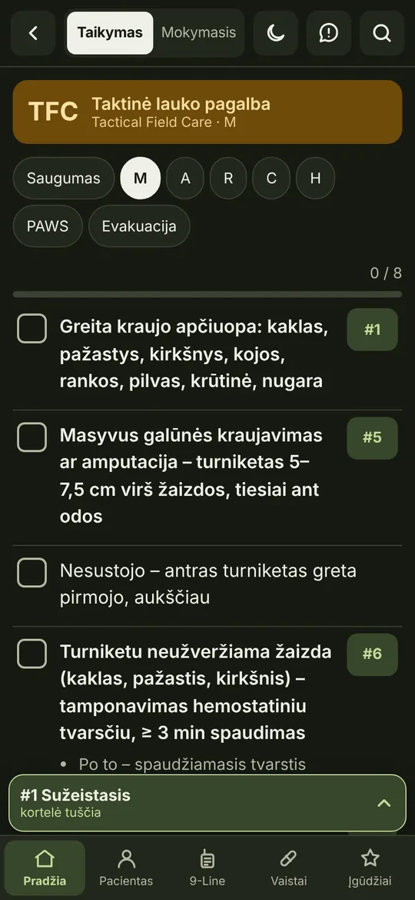
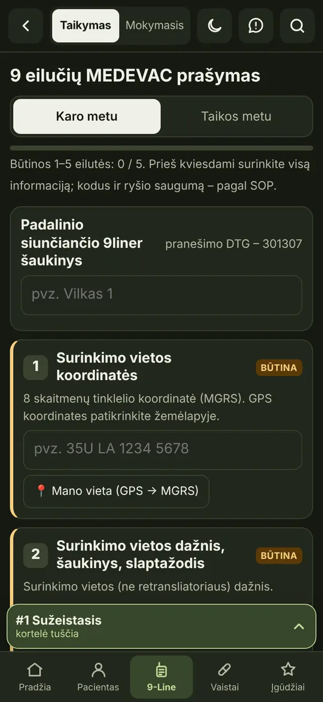
PCC gidas
Kai sužeistąjį tenka prižiūrėti valandas ar paras iki evakuacijos. Programėlė primena, ką tikrinti kas valandą ir kas parą, ir veda stebėjimo lapą.
- Rodiklių, skysčių balanso ir vaistų žurnalas su priminimais
- Valandinė ir paros priežiūra, ypatingos būklės
- Telekonsultacija, MIST ir perdavimas QR kodu
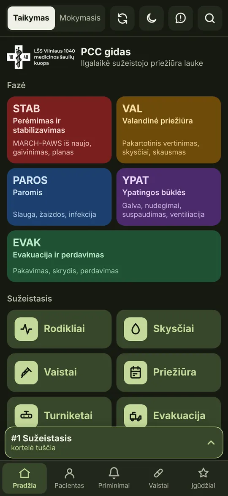
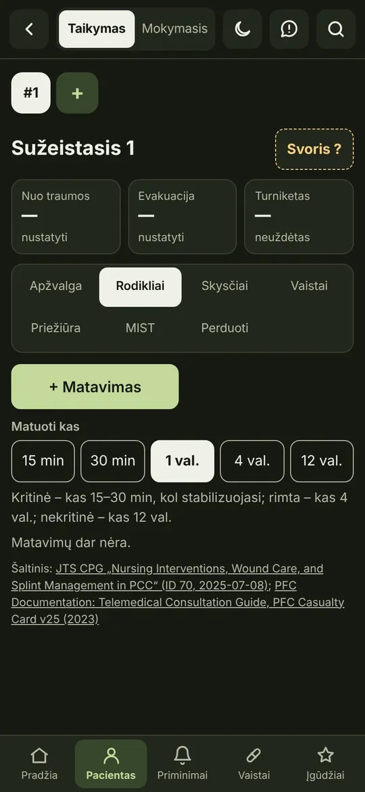
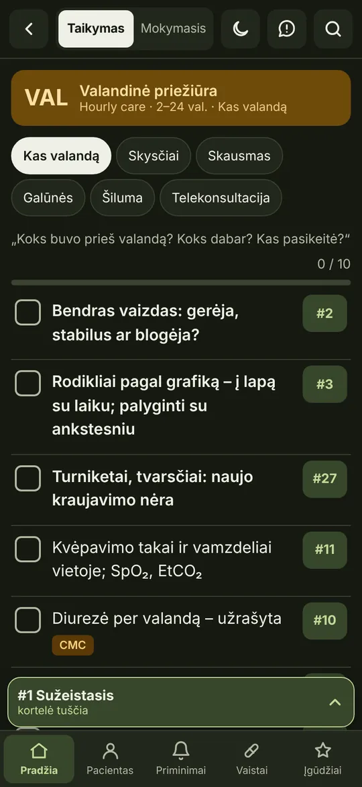
Kaip įsidiegti
Programėlės įsidiegia iš naršyklės – parduotuvės nereikia. Įdiegta programėlė atsidaro visame ekrane ir veikia be interneto. Kiekvieną įdiekite atskirai.
- Atidarykite programėlės nuorodą Safari naršyklėje ir palaukite, kol puslapis įsikels. Jei nuoroda atsidarė Messenger ar Facebook, pirmiausia pasirinkite „Atidaryti Safari“.
- Paspauskite „Bendrinti“ – kvadratą su rodykle aukštyn. iOS 26 pirmiausia paspauskite ⋯ apačioje.
- Sąraše pasirinkite „Įtraukti į pradžios ekraną“. Nematote – paspauskite „Rodyti daugiau“.
- Paspauskite „Įtraukti“ viršuje dešinėje. Ženkliukas atsiras pradžios ekrane.
Tinka ir Chrome iPhone telefone (iOS 16.4 ar naujesnė): „Bendrinti“ adreso juostoje → „Įtraukti į pradžios ekraną“.
- Atidarykite programėlės nuorodą Chrome naršyklėje.
- Jei apačioje pasirodo „Įdiegti programą“ – paspauskite. Jei ne – viršuje dešinėje paspauskite meniu ⋮.
- Pasirinkite „Įdiegti programą“ arba „Pridėti prie pradžios ekrano“ ir patvirtinkite „Įdiegti“.
- Ženkliukas atsiras pradžios ekrane ir programų sąraše.
Samsung naršyklėje: meniu ☰ → „Pridėti puslapį prie“ → „Pradžios ekranas“.
- Atidarykite programėlės nuorodą Chrome arba Edge naršyklėje – ja galima naudotis iš karto.
- Norint atidaryti atskirame lange, adreso juostos dešinėje paspauskite įdiegimo ženkliuką (monitorius su rodykle) ir pasirinkite „Įdiegti“.
- Programėlė atsiras darbalaukyje ir programų sąraše, ją galima prisegti prie užduočių juostos.
Mac kompiuteryje Safari: meniu „Failas“ → „Įtraukti į Dock“. SIM monitorių patogu rodyti per projektorių ar didelį ekraną – tiesiog atidarykite naršyklėje.
Pirmą kartą – su internetu
Atidarius programėlę su internetu, turinys išsisaugo telefone ir toliau veikia be ryšio.
Atsinaujina pati
Nauja versija atsisiunčia, kai programėlė atidaroma su internetu. Kartais reikia ją uždaryti ir atidaryti dar kartą.
Pašalinti
Palaikykite ženkliuką ir pasirinkite „Pašalinti“, kaip ir bet kurią kitą programėlę.